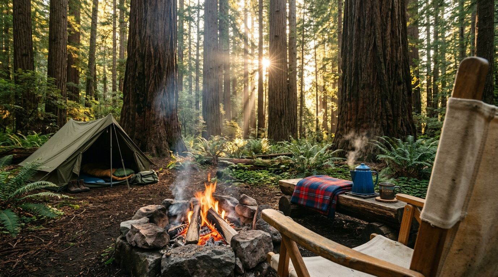
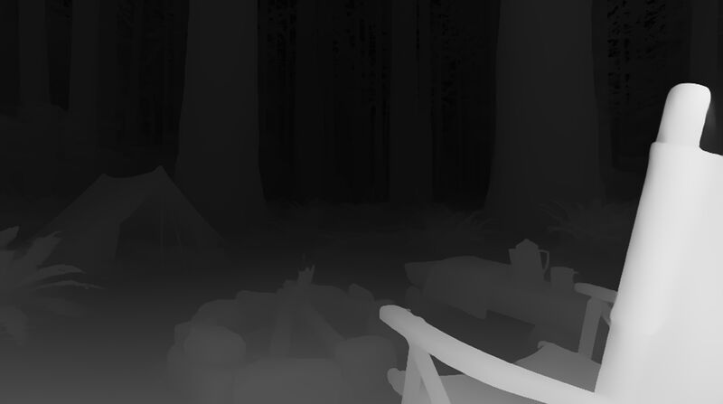
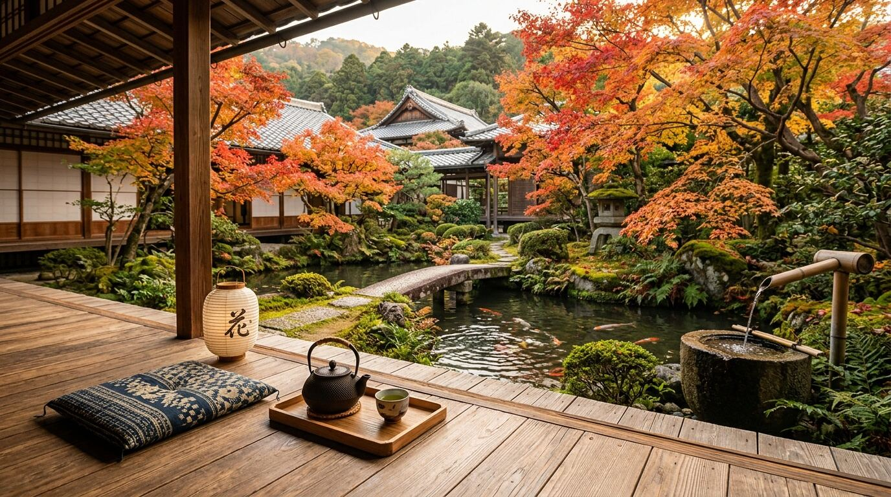
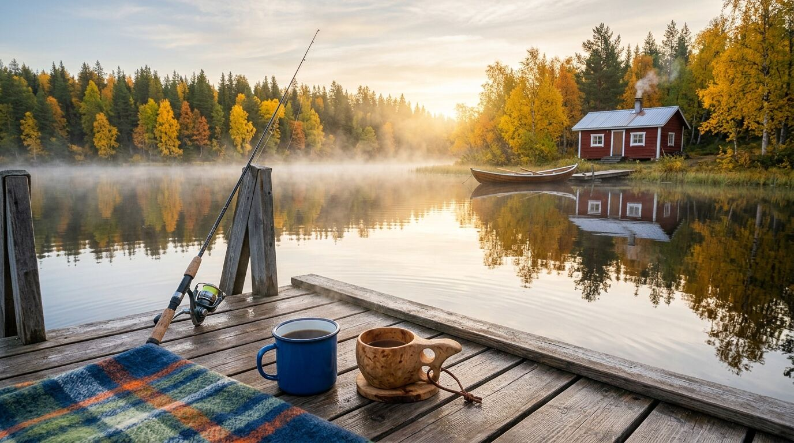
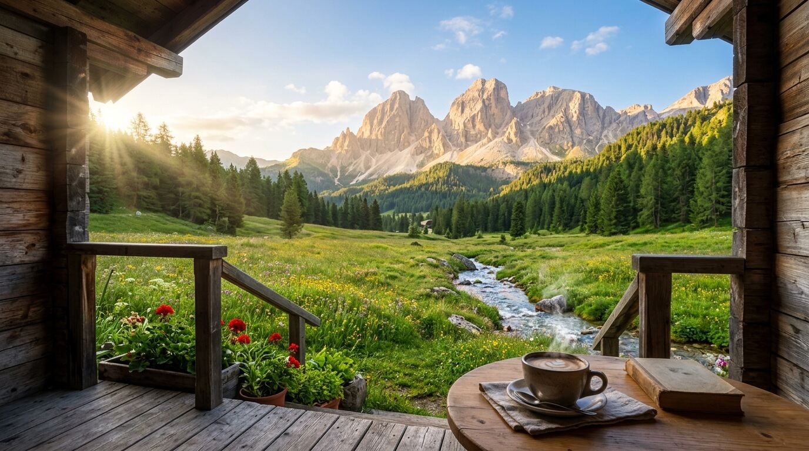

Work / Cozy Ambience
Cozy Ambience
A zero-cost pipeline that runs a YouTube channel of relaxing ambience videos: a scene inspired by a real place, gentle animation, layered natural sound, and an automatic upload, all on GitHub Actions while my PC is off.
- Role
- Concept, visual and sound standards, approval of every scene, publishing
- Built with
- Python, NumPy, Pillow, ffmpeg, Depth Anything V2, YouTube Data API, GitHub Actions
- Timeline
- Live since 17 October 2026
- Output
- 18 scenes uploaded; long videos of 30–45 minutes plus Shorts
- Cost
- Zero: free CI minutes and open-source tools

From one picture to 45 minutes
Each video starts as one still image. The pipeline makes it breathe.
The animation is procedural, written in Python with NumPy: rain on three depths, snow, drifting fog, clouds that move 31 pixels per loop, meadows swaying in gusts, water flowing along its current with sun glints, steam rising from a cup. Every particle travels a whole number of screens per cycle, so the 20-second loop repeats for 45 minutes without a visible jump.
Layers, like a stage set
Rain must never fall in front of the porch roof. Each new image automatically gets a depth map from a GitHub workflow; the near objects are cut out with a depth threshold and, where needed, hand-drawn polygons. The order is always: animated background, then the untouched foreground on top, then the effects that belong to the foreground, like fire, steam and lanterns.


Sound follows the same idea. Rain, drops on wood, thunder, a stream or birds are separate loops of 97, 131, 173 and 229 seconds. Because the lengths share no common factor, the combined mix doesn't repeat within a video. No music, only sounds that belong to the scene.
A channel that runs itself
- A scheduled workflow runs just after midnight Italian time on Tuesday, Thursday and Saturday. It picks the next approved scene (or the one with the nearest release date), renders the long video and two Shorts, and uploads them as private, so they are on YouTube before the morning.
- A daily workflow catches up on thumbnails and Shorts that the YouTube API quota postponed.
- When the queue is empty the run ends cleanly and uploads nothing.
- Nothing is published blind: a scene becomes "ready" only after I approve its image and test clip, and I make each video public myself.
- OAuth credentials live only in GitHub's encrypted secrets, never in the code.



The standard
I approved one reference video, a sunny Dolomites meadow, and wrote its qualities down as the standard for every scene: photorealistic first-person view from a cozy spot, a warm detail in the foreground, no people and no text, natural colours, water that is never still, 1080p at 24 fps. Writing the standard down is what lets the pipeline produce new scenes without me re-explaining taste every time.
